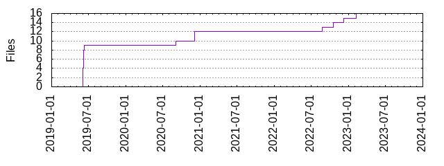

Files
General
Activity
Authors
Files
Lines
Tags
Total files
16
Total lines
872
Average file size
1833.62 bytes
File count by date

Extensions
Extension
Files (%)
Lines (%)
Lines/file
8 (50.00%)
577 (66.17%)
72
bazel
1 (6.25%)
7 (0.80%)
7
bzl
1 (6.25%)
16 (1.83%)
16
bzlmod
1 (6.25%)
4 (0.46%)
4
md
3 (18.75%)
155 (17.78%)
51
sh
1 (6.25%)
67 (7.68%)
67
yml
1 (6.25%)
46 (5.28%)
46